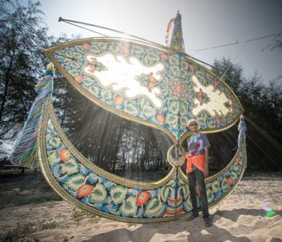

Malaysia is located in Southeastern Asia which is close to Thailand, Indonesia, & Singapore.
Malaysia uses an alphabet language such as ABC and our second language is English so it is not that hard to speak over there :).
In Malaysia, the government actually ruled by a King and Queen for a long time.
With the constitutional changes, the rules do have a King and Queen but are governed by a Prime Minister.
The Malaysian Flag and the United States are closely similar.
As you can see in the photo above, the Malaysia flag does look similar to the United States and the stripes also mean the same.
In the United States we have 13 stripes for original colonies and in Malaysia 13 stripes for equality of the 13 member states.
Malaysia Have An Old Traditional Hobby
Let me present to you all "WAU KITES", in other names; MOON KITES.

WAU Kites have been going on for many generations in Malaysia and it is the most fun and amazing type of kites that are built with Bamboo sticks.
This type of kite is so amazing that when the wind blows the kites, you can hear a sound as the wind goes through between them. The interesting part the sound also can be heard saying, "WAU".